AI Hub "한국인 감정인식을 위한 복합 영상" 데이터셋(피험자 1,100명, 7감정, ~240K장)에 대해 연세대에서 298명을 대상으로 수행한 감정 라벨 검증 실험 데이터를 분석하였다. 본 분석에서는 검증 실험의 부정 선택("해당 감정 아님") 데이터를 인구통계학적·감정 구조적 변수별로 분해하고, 원본 annotator 3인 라벨과 교차검증하여 한국인의 감정 인식 경향성을 도출하였다.
"한국인 감정인식을 위한 복합 영상" 데이터셋은 한국인의 감정 표현 영상을 수집·라벨링한 대규모 데이터셋이다.
| 항목 | 내용 |
|---|---|
| 피험자 | 1,100명 (전문인 48%, 일반인 52%) |
| 감정 | 기쁨, 분노, 슬픔, 중립, 당황, 불안, 상처 (7종) |
| 촬영 | 감정 유도 후 다양한 배경(10종)에서 촬영 |
| 라벨링 | annotator 3인 독립 판정 (감정 + bounding box) |
| 규모 | ~240K장 (해제된 4감정 기준) |
피험자 유형:
라벨 구조: 각 사진에 대해 faceExp_uploader(촬영 시 의도한 감정)와 annotator 3인(annot_A/B/C)의 독립 감정 판정이 기록됨.
연세대 심리학과에서 수행한 외부 검증 실험으로, 원본 데이터의 감정 라벨 품질을 독립적으로 평가하였다.
| 항목 | 내용 |
|---|---|
| 평가자 | 298명 (연세대 심리학과 학생, 실험 참가 크레딧 부여) |
| 과제 | "해당 감정에 해당하지 않는 이미지를 모두 고르세요" |
| 구조 | 90세트 × 10장/세트, 제한시간 15초/세트 |
| 대상 감정 | 기쁨, 분노, 슬픔, 중립 (4감정) |
| 규모 | 247,490 응답, 242,600 고유사진 |
is_selected = 1은 "이 사진은 해당 감정이 아니다"라는 부정 선택을 의미. (앱 소스코드 app.py에서 확인)
평가자는 Streamlit 기반 웹 앱을 통해 실험에 참여하였다. 각 세트에서 하나의 감정(기쁨/분노/슬픔/중립 중 무작위 배정)에 대해 10장의 사진이 제시되며, 평가자는 해당 감정에 해당하지 않는 사진을 복수 선택한다.
연세대 최종 필터링 결과: 검증 후 235,156장을 최종 유지 목록으로 확정하였다.
| 감정 | 유지 장수 | 원본 대비 | 제거율 |
|---|---|---|---|
| 기쁨 | 63,030 | ~100% | ~0% |
| 중립 | 61,987 | ~100% | ~0% |
| 분노 | 55,175 | 92.4% | 7.6% |
| 슬픔 | 54,964 | 91.9% | 8.1% |
이 가설을 검증하기 위해, 연세대 설문의 "아님" 선택 데이터를 다음 변수별로 분해하고 통계 검정을 수행하였다:
| 비교 | chi² | p-value | 결론 |
|---|---|---|---|
| 감정 유형 × 아님 선택 | 5,913 | ≈0 | 감정에 따라 선택률 유의하게 다름 |
| annotator 3인 일치 × 아님 선택 | 424 | 2.7×10-94 | 일치 여부가 선택과 연관 |
| majority=uploader × 아님 선택 | 579 | 7.3×10-128 | uploader 라벨 정확도와 연관 |
| 전문인 여부 × 아님 선택 | 215 | 9.5×10-49 | 전문인/일반인에 따라 차이 |
| 피험자 성별 × 아님 선택 | 169 | 1.9×10-37 | 성별에 따라 차이 |
| 비교 | t값 | p-value | 결론 |
|---|---|---|---|
| 나이 × 아님 선택 | -1.22 | 0.224 | 유의하지 않음 |
| 프레임 번호 × 아님 선택 | 3.13 | 0.002 | 통계 유의하나 실질 차이 미미 |
| 조건 | Odds Ratio | 해석 |
|---|---|---|
| annotator 3인 일치 | 0.772 | 3인 일치 시 "아님" 선택 확률 23% 감소 |
| majority = uploader | 0.718 | 다수의견 일치 시 "아님" 확률 28% 감소 |
| 비교 (3인일치 vs 불일치) | Cohen's h | 판정 |
|---|---|---|
| 기쁨 | 0.076 | small |
| 분노 | 0.052 | small |
| 슬픔 | 0.171 | small (medium 근접) |
| 중립 | 0.022 | negligible |
| 비교 | r | p | 해석 |
|---|---|---|---|
| 분노×슬픔 rejection (피험자 내) | 0.340 | <0.001 | 부정 감정 표현력이 피험자 수준 특성 |
| 세트 번호 vs rejection rate | -0.633 | ≈0 | 후반으로 갈수록 판단 느슨 (피로도) |
| 기쁨×중립 rejection | 0.072 | — | 거의 독립 |
| 변수 | |coefficient| | 방향 |
|---|---|---|
| majority≠uploader | 0.113 | "아님"↑ (가장 강한 예측 변수) |
| annotator 3인일치 | 0.090 | "아님"↓ |
| 피험자 성별 | 0.053 | 약한 기여 |
| 프레임 번호 | 0.023 | 거의 무관 |
| 나이 | 0.012 | 거의 무관 |
피험자가 특정 감정을 표현했을 때, annotator 3인이 동일 감정으로 인식한 비율:
| 감정 | 동일 인식률 | 주요 혼동 대상 |
|---|---|---|
| 기쁨 | 96.2% | 중립(1.6%) |
| 중립 | 88.8% | 불안(3.0%), 슬픔(2.2%) |
| 분노 | 70.3% | 불안(8.8%), 중립(5.5%), 상처(5.0%) |
| 슬픔 | 68.2% | 상처(11.9%), 불안(7.7%), 중립(7.1%) |
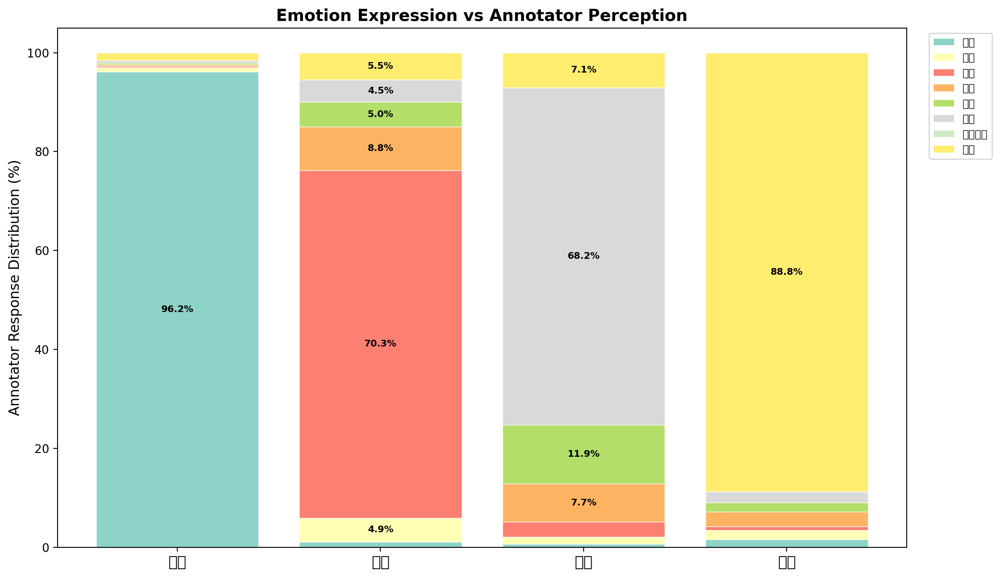
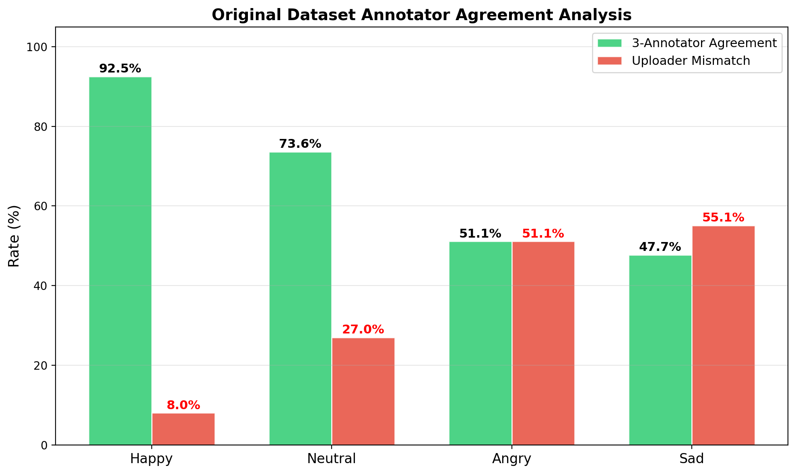
| 혼동 방향 | 비율 | 역방향 | 특성 |
|---|---|---|---|
| 슬픔 → 상처 | 11.9% | 0% | 완전 일방향 |
| 분노 → 불안 | 8.8% | 0% | 완전 일방향 |
| 슬픔 → 불안 | 7.7% | 0% | 완전 일방향 |
| 슬픔 → 중립 | 7.1% | 2.2% | 비대칭 |
| 기쁨 ↔ 중립 | 1.6% | 1.6% | 유일한 대칭 |
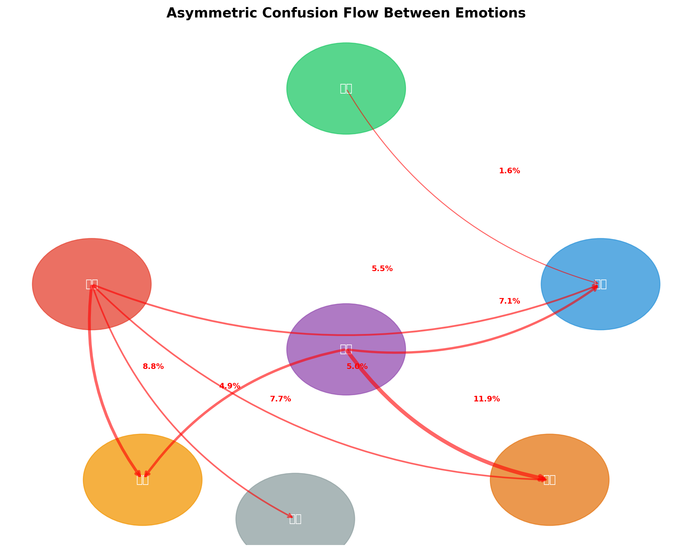
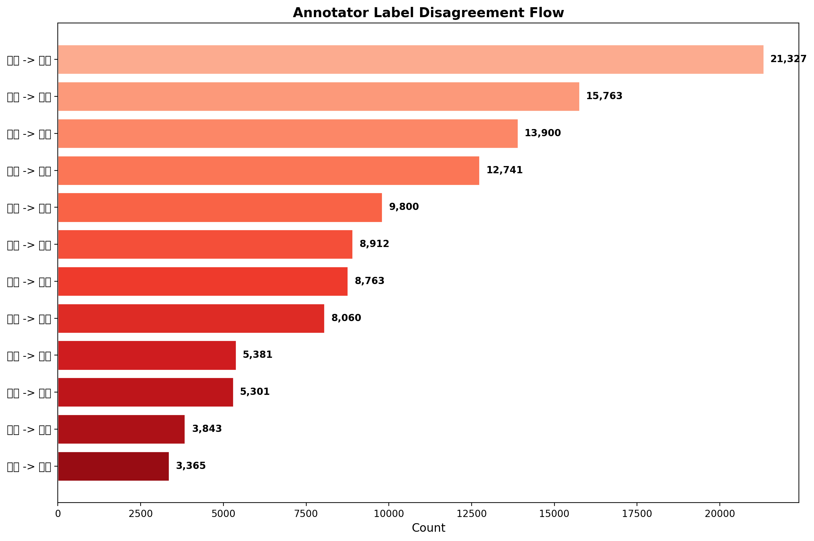
| 감정 | 전문인 인식률 | 일반인 인식률 | 차이 |
|---|---|---|---|
| 기쁨 | 95.9% | 96.4% | -0.5%p |
| 분노 | 67.3% | 73.0% | -5.7%p |
| 슬픔 | 67.3% | 69.0% | -1.7%p |
| 중립 | 87.6% | 89.8% | -2.2%p |
chi²=215, p=9.5×10-49
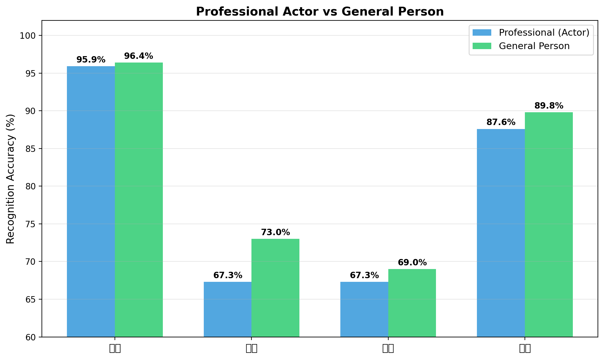
| 감정 | 여성 | 남성 | 차이 |
|---|---|---|---|
| 기쁨 | 96.5% | 95.7% | +0.8%p |
| 분노 | 67.9% | 73.2% | -5.3%p |
| 슬픔 | 66.5% | 70.3% | -3.8%p |
| 중립 | 88.2% | 89.5% | -1.3%p |
chi²=169, p=1.9×10-37
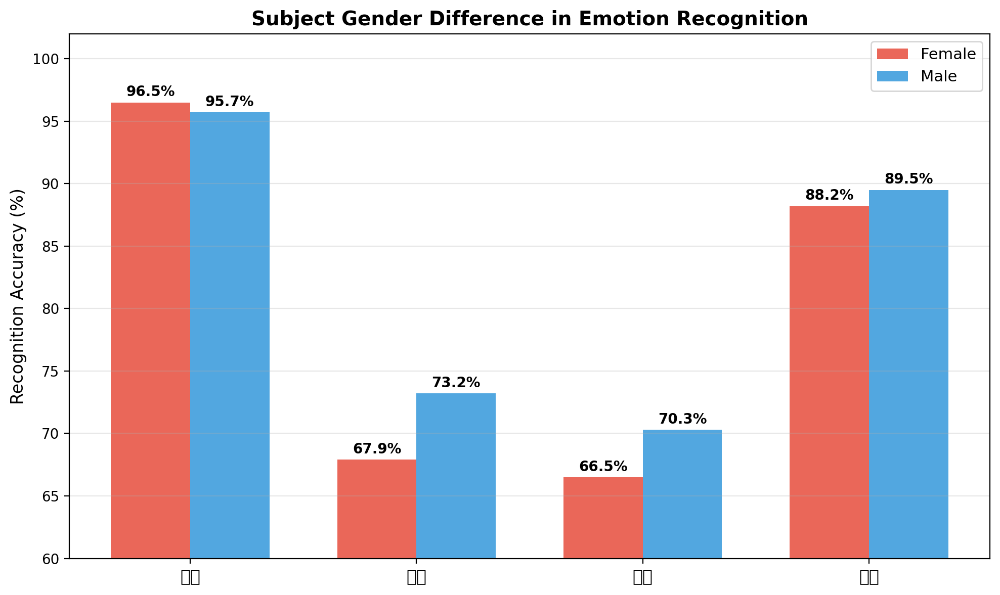
| 감정 | 10대 | 20대 | 30대 | 40대 | 50대 | 60대 |
|---|---|---|---|---|---|---|
| 기쁨 | 97.4 | 96.1 | 95.9 | 97.5 | 94.9 | 98.2 |
| 분노 | 72.0 | 69.1 | 70.8 | 71.8 | 78.3 | 75.4 |
| 슬픔 | 74.4 | 67.0 | 68.3 | 70.7 | 71.7 | 85.9 |
| 중립 | 91.4 | 89.5 | 88.2 | 87.3 | 87.1 | 85.8 |
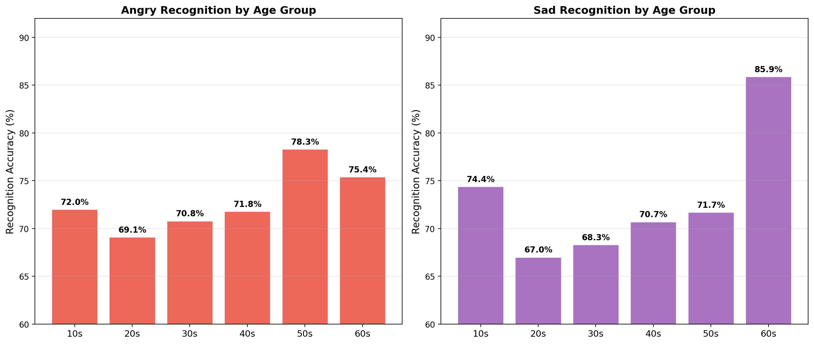
| 세트 구간 | 평균 "아님" 선택률 |
|---|---|
| 초반 (1-30) | 12.3% |
| 중반 (31-60) | 11.5% |
| 후반 (61-90) | 11.0% |
Pearson r = -0.633, p ≈ 0
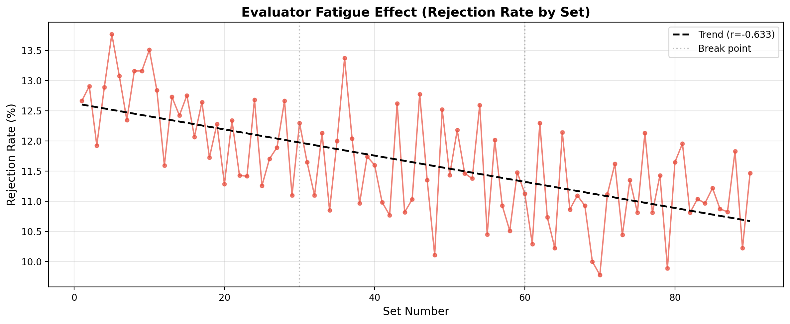
| 감정 쌍 | r | 해석 |
|---|---|---|
| 분노 × 슬픔 | 0.340 | 부정 감정 표현력이 피험자 수준 특성 |
| 기쁨 × 슬픔 | 0.207 | 약한 상관 |
| 기쁨 × 분노 | 0.129 | 약한 상관 |
| 슬픔 × 중립 | -0.081 | 거의 독립 |
다음 변수들은 "아님" 선택과 유의한 관계가 확인되지 않아 분석에서 제외하였다:
annotator 일치 × majority=uploader × 전문인 여부의 조합별 "아님" 선택률:
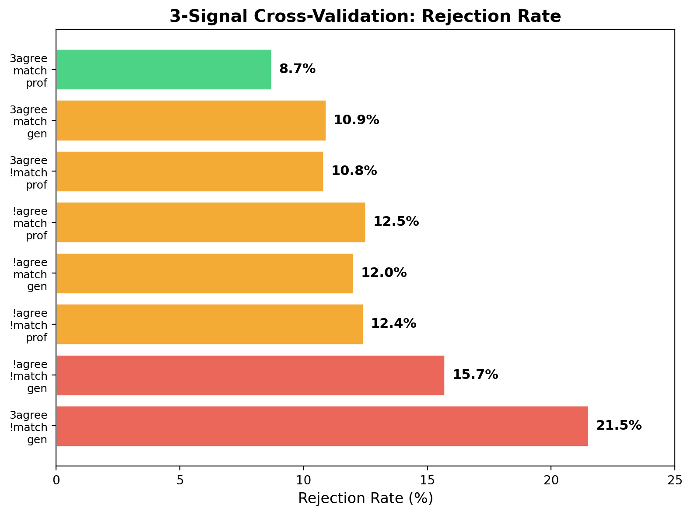
서로 독립적으로 측정된 5개 신호가 전부 같은 감정 순서를 보임:
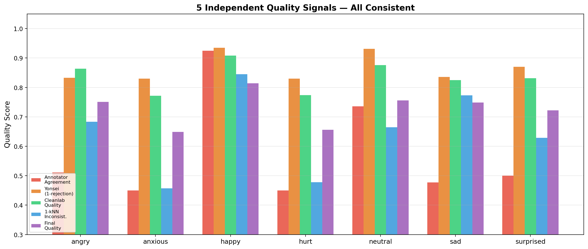
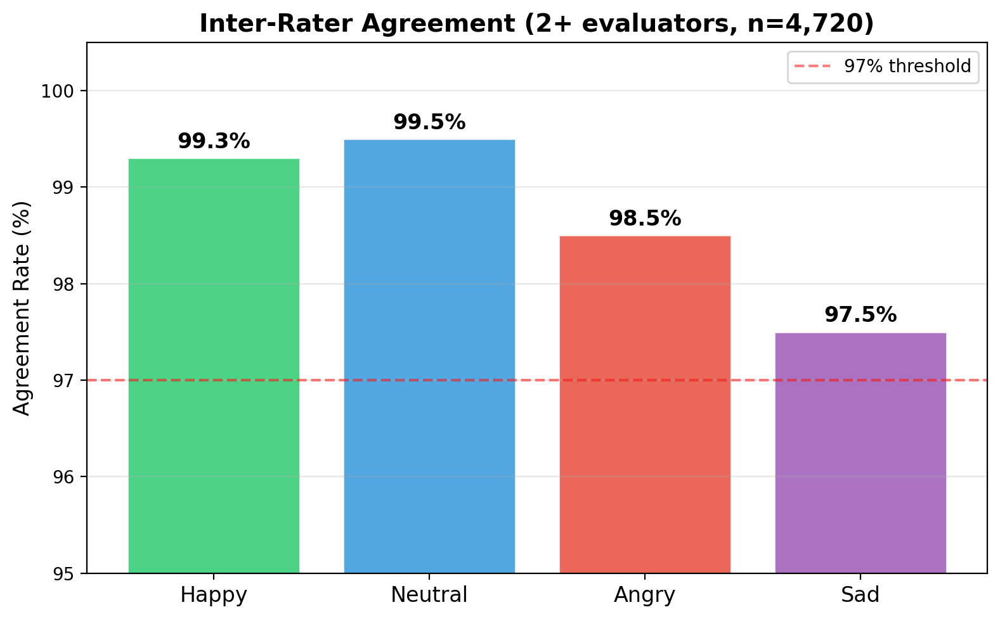